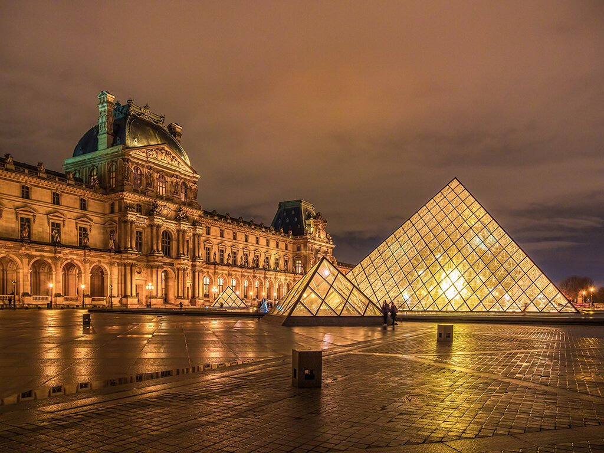

Europa rebosa arte por los cuatro costados. Y no lo decimos solo nosotros, ya que el Viejo Continente puede presumir de contar con los mejores museos del mundo. Las obras de arte más importantes de la historia del arte se encuentran en sus museos y, desde luego, merece la pena realizar un viaje exclusivamente para pasear por sus galerías y descubrir la belleza cultural que atesoran los museos europeos.
No obstante, seguro que os habéis realizado la pregunta más común en este sentido: ¿Cuáles son los mejores museos de Europa?
